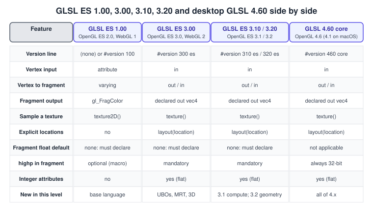
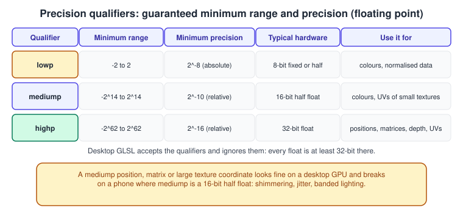
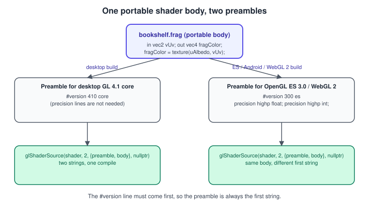

GLSL ES and Shader Portability
|
This content was generated with the assistance of AI and should be verified against the official documentation before being relied on in production. |
OpenGL ES uses its own shading language, GLSL ES, which looks like desktop GLSL but is a separate specification with its own
version numbers, its own #version syntax and, above all, mandatory precision qualifiers. A shader that compiles on a desktop
GPU often fails on a phone, or compiles and renders wrongly, for reasons that have nothing to do with the maths. This page lists
the language differences that matter, explains the precision model, and builds one portable shader body that runs unchanged on
desktop OpenGL, OpenGL ES, Android and WebGL 2 by changing only a small version preamble.
The facts were checked in November 2026. The versions documented are GLSL ES 1.00 (OpenGL ES 2.0, WebGL 1), GLSL ES 3.00 (OpenGL ES 3.0, WebGL 2), GLSL ES 3.10 (OpenGL ES 3.1), GLSL ES 3.20 (OpenGL ES 3.2, revision of 14 August 2023) and desktop GLSL 4.60. Requirements: the examples compile as C++20 with GLFW, glad2 and a desktop context of at least OpenGL 4.1 core, and as Kotlin on Android API 18 or later (OpenGL ES 3.0). The Bookshelf book of the running example is a textured quad here; it becomes a rotating box on Coordinate Systems and Transforms. For the language itself see The GLSL Language; for the way the shader stages fit together see The Rendering Pipeline, and for the other shading languages see Shading Languages Landscape.
Four dialects, one family
GLSL ES is derived from desktop GLSL, but each version of OpenGL ES pairs with a specific GLSL ES version, and the numbers do not line up with the desktop ones.

-
GLSL ES 1.00 is the language of OpenGL ES 2.0 and WebGL 1. It uses
attributeandvarying, writes the fragment colour to the built-ingl_FragColorand samples withtexture2D. A shader without a#versionline is GLSL ES 1.00. -
GLSL ES 3.00 arrived with OpenGL ES 3.0 and WebGL 2. It adopts the
in/outstyle of desktop GLSL 3.30, declares fragment outputs explicitly, addslayout(location = n)for vertex inputs and fragment outputs, integer types in attributes, uniform blocks and many more built-in functions. The first line must be exactly#version 300 es. -
GLSL ES 3.10 (OpenGL ES 3.1) adds compute shaders, shader storage blocks, atomic counters, image load and store and
layout(binding = n). The directive is#version 310 es. -
GLSL ES 3.20 (OpenGL ES 3.2) adds geometry and tessellation shaders and more texture types. The directive is
#version 320 es. Compute is covered in Compute Shaders and the other stages in Geometry and Tessellation Shaders. -
Desktop GLSL 4.60 is used with
#version 460 core. On macOS, which stopped at OpenGL 4.1, the highest usable line is#version 410 core; the examples on this page use 4.10 so that they run everywhere.
Note the es after the number: #version 300 es is a different language from #version 300, which is not valid. On desktop the
profile word is core (or compatibility); on ES it is es. The version-and-profile story of the API is told in
Versions, Profiles and Extensions.
What changed from GLSL ES 1.00 to 3.00
Most code written for OpenGL ES 2.0 needs the same small set of edits to become GLSL ES 3.00, and the same edits make it close to desktop GLSL 3.30.
| GLSL ES 1.00 | GLSL ES 3.00 and later | Desktop 330 core and later | Notes |
|---|---|---|---|
|
|
|
Vertex shader inputs. Add |
|
|
|
Vertex shader output. |
|
|
|
Fragment shader input; integers must be |
|
|
|
Declared outputs, with |
|
|
|
One overloaded function; |
|
|
built in |
Derivatives were an extension in OpenGL ES 2.0. |
constant loop bounds, constant array indices |
arbitrary loops and indices |
arbitrary |
GLSL ES 1.00 Appendix A restricted flow control to what the weakest hardware could unroll. |
no integer attributes |
|
same |
Integer vertex attributes need |
no uniform blocks |
|
same |
What is different from desktop GLSL
Even when the syntax is the same, the ES languages are deliberately smaller. These are the differences that bite most often when a shader written on a desktop is moved to a phone or a browser.
| Topic | Desktop GLSL 4.60 core | GLSL ES 3.00 to 3.20 |
|---|---|---|
Implicit conversions |
|
No implicit conversion between integers and floats: |
Default precision |
Not applicable: floats are at least 32-bit. |
The fragment shader has no default float precision and must declare one. Vertex shaders default to |
|
Available since 4.00 ( |
Not available. |
1D samplers |
|
None: use a 2D texture of height 1. |
|
Core since 4.20 (not on macOS 4.1; use |
Core since ES 3.10; ES 3.00 needs |
Compute shaders |
4.30. |
ES 3.10. |
Geometry and tessellation |
3.20 and 4.00. |
ES 3.20; earlier through |
Clip and cull distances |
Built in ( |
Extension only ( |
Extensions |
|
|
Precision qualifiers
Every floating-point and integer variable in GLSL ES has a precision: lowp, mediump or highp. They are hints about the range
and accuracy the hardware must provide. The specification guarantees only minimums, shown below; a GPU may give more.

-
highpis a 32-bit float on practically every GPU. Use it for positions, matrices, depth and any texture coordinate that addresses a large texture. -
mediumpis a 16-bit half float on many mobile GPUs. It is accurate enough for colours, normalised directions and small texture coordinates, and it can be faster and use less power because the arithmetic units and registers are half the size. -
lowpis a legacy hint that modern GPUs mostly treat asmediump. Do not rely on it.
Integers follow the same scheme with larger ranges in ES 3.00: a highp int is a 32-bit integer, a mediump int at least
16 bits and a lowp int at least 9 bits.
Default precisions and where you must declare one
A default precision statement such as precision highp float; sets the precision for every variable of that type that has no
qualifier of its own. The defaults are:
-
Vertex shader:
highpforfloatandint. -
Fragment shader:
mediumpforintandlowpfor the sampler types, but no default forfloat. A fragment shader that usesfloatwithout declaring a default precision, or without qualifying every variable, fails to compile. -
In GLSL ES 1.00
highpin a fragment shader is optional: test the macroGL_FRAGMENT_PRECISION_HIGHbefore using it. In GLSL ES 3.00 and laterhighpis mandatory in fragment shaders, soprecision highp float;is always valid.
The habit that avoids almost all problems is to start every ES fragment shader with:
precision highp float;
precision highp int;and to lower individual variables to mediump only where profiling says it matters.
Why it matters even if you test on desktop
A desktop GPU computes everything in 32-bit, so a desktop driver accepts the qualifiers and ignores them. A bug where a world-space
position, a model-view-projection matrix or a large UV is declared mediump is therefore invisible on the desktop and appears on a
phone as jittering geometry, banded lighting or swimming textures. The only reliable defence is to test on real devices, and to keep geometry data at highp.
Querying what the device gives you
glGetShaderPrecisionFormat returns the base-2 logarithm of the representable range and of the relative precision, for any
shader stage and precision. It exists in OpenGL ES 2.0 and later and, on desktop, in OpenGL 4.1 and later (GL_ARB_ES2_compatibility).
#include <glad/gl.h>
#include <cstdio>
void printPrecision(const char* name, GLenum stage, GLenum type) {
GLint range[2] = {0, 0};
GLint precision = 0;
glGetShaderPrecisionFormat(stage, type, range, &precision);
// range[0] and range[1] are log2 of the smallest and largest magnitude;
// precision is the number of bits of the mantissa (0 for integer types).
std::printf("%-28s range 2^%d..2^%d, %d bits of precision\n",
name, range[0], range[1], precision);
}
void dumpFragmentPrecisions() {
printPrecision("fragment lowp float", GL_FRAGMENT_SHADER, GL_LOW_FLOAT);
printPrecision("fragment mediump float", GL_FRAGMENT_SHADER, GL_MEDIUM_FLOAT);
printPrecision("fragment highp float", GL_FRAGMENT_SHADER, GL_HIGH_FLOAT);
printPrecision("fragment mediump int", GL_FRAGMENT_SHADER, GL_MEDIUM_INT);
printPrecision("fragment highp int", GL_FRAGMENT_SHADER, GL_HIGH_INT);
}A result of range 0 and precision 0 for GL_HIGH_FLOAT in a fragment shader means the device does not support highp there, which
only happens with OpenGL ES 2.0 hardware.
One shader body, one preamble per platform
The version directive must be the first thing in a shader, and it differs between platforms. The portable solution is to keep the
shader body free of any #version line and to put the platform-dependent lines in a preamble that the application prepends.
glShaderSource accepts an array of strings that the driver concatenates, so the preamble and the body can stay separate.

The body is written in the common subset of GLSL ES 3.00 and desktop GLSL 3.30 or later: in/out, layout(location = n) on
vertex inputs and fragment outputs, texture(), explicit float literals, no binding qualifiers, no double. The preamble
chooses the dialect and, on ES, the default precisions:
| Target | Preamble |
|---|---|
Desktop (macOS and everything else) |
|
OpenGL ES 3.0, Android, WebGL 2 |
|
OpenGL ES 3.1 and 3.2 |
|
When code needs to differ in a few places, the preprocessor does the work. GL_ES is defined by every GLSL ES compiler and never by
desktop GLSL; __VERSION__ holds the language version number, so #if __VERSION__ >= 300 distinguishes 100 from 300 and later.
A complete C++ loader
The header below chooses the dialect from the context actually created, concatenates preamble and body, and reports errors with the driver’s log. It is used by the program that follows.
// shader_loader.hpp: compile and link GLSL with a platform preamble.
#pragma once
#include <glad/gl.h>
#include <stdexcept>
#include <string>
enum class Dialect { Desktop410, Desktop460, Es300, Es310, Es320 };
// Pick the dialect from the version of the context that was really created.
inline Dialect pickDialect(bool isEs, GLint major, GLint minor) {
if (isEs) {
if (major > 3 || (major == 3 && minor >= 2)) return Dialect::Es320;
if (major == 3 && minor == 1) return Dialect::Es310;
return Dialect::Es300;
}
return (major > 4 || (major == 4 && minor >= 6)) ? Dialect::Desktop460
: Dialect::Desktop410;
}
inline const char* preambleFor(Dialect d) {
switch (d) {
case Dialect::Desktop410: return "#version 410 core\n";
case Dialect::Desktop460: return "#version 460 core\n";
case Dialect::Es300: return "#version 300 es\nprecision highp float;\nprecision highp int;\n";
case Dialect::Es310: return "#version 310 es\nprecision highp float;\nprecision highp int;\n";
case Dialect::Es320: return "#version 320 es\nprecision highp float;\nprecision highp int;\n";
}
return "";
}
inline std::string infoLog(GLuint object, bool isProgram) {
GLint len = 0;
if (isProgram) glGetProgramiv(object, GL_INFO_LOG_LENGTH, &len);
else glGetShaderiv(object, GL_INFO_LOG_LENGTH, &len);
std::string log(len > 1 ? static_cast<size_t>(len) : 1, '\0');
if (isProgram) glGetProgramInfoLog(object, len, nullptr, log.data());
else glGetShaderInfoLog(object, len, nullptr, log.data());
return log;
}
inline GLuint compileStage(GLenum stage, Dialect dialect, const std::string& body) {
const GLchar* sources[2] = {preambleFor(dialect), body.c_str()};
GLuint shader = glCreateShader(stage);
glShaderSource(shader, 2, sources, nullptr);
glCompileShader(shader);
GLint ok = GL_FALSE;
glGetShaderiv(shader, GL_COMPILE_STATUS, &ok);
if (!ok) {
std::string log = infoLog(shader, false);
glDeleteShader(shader);
throw std::runtime_error("shader compile failed: " + log);
}
return shader;
}
inline GLuint linkProgram(Dialect dialect, const std::string& vertexBody,
const std::string& fragmentBody) {
GLuint vs = compileStage(GL_VERTEX_SHADER, dialect, vertexBody);
GLuint fs = compileStage(GL_FRAGMENT_SHADER, dialect, fragmentBody);
GLuint program = glCreateProgram();
glAttachShader(program, vs);
glAttachShader(program, fs);
glLinkProgram(program);
glDetachShader(program, vs);
glDetachShader(program, fs);
glDeleteShader(vs);
glDeleteShader(fs);
GLint ok = GL_FALSE;
glGetProgramiv(program, GL_LINK_STATUS, &ok);
if (!ok) {
std::string log = infoLog(program, true);
glDeleteProgram(program);
throw std::runtime_error("program link failed: " + log);
}
return program;
}Source: OpenGL 4 reference: glShaderSource.
Line numbers in the compiler log count the preamble lines too, so an error reported on line 4 of a body that follows a one-line preamble is on body line 3. Keep the preambles short and their line counts in mind.
A complete program using the portable body
This program opens a 4.1 core context (the macOS baseline of Bookshelf GL), generates an 8 by 8 checkerboard in memory so that it needs no asset files, and draws it on a quad with the portable shader body. Nothing in it is desktop-only apart from the GLFW window code, so the loader and shaders carry over to Android unchanged.
// main.cpp: portable textured quad. Build with CMake: glfw, glad2 (gl:core=4.1).
#include <glad/gl.h>
#include <GLFW/glfw3.h>
#include <array>
#include <cstdint>
#include <cstdio>
#include <vector>
#include "shader_loader.hpp"
static const char* kVertexBody = R"GLSL(
layout(location = 0) in vec2 aPos;
layout(location = 1) in vec2 aUv;
out vec2 vUv;
void main() {
vUv = aUv;
gl_Position = vec4(aPos, 0.0, 1.0);
}
)GLSL";
static const char* kFragmentBody = R"GLSL(
in vec2 vUv;
uniform sampler2D uAlbedo;
out vec4 fragColor;
void main() {
// mediump is plenty for a colour; highp is the default from the preamble.
mediump vec4 c = texture(uAlbedo, vUv);
fragColor = c;
}
)GLSL";
int main() {
if (!glfwInit()) return 1;
glfwWindowHint(GLFW_CONTEXT_VERSION_MAJOR, 4);
glfwWindowHint(GLFW_CONTEXT_VERSION_MINOR, 1);
glfwWindowHint(GLFW_OPENGL_PROFILE, GLFW_OPENGL_CORE_PROFILE);
glfwWindowHint(GLFW_OPENGL_FORWARD_COMPAT, GLFW_TRUE); // required on macOS
GLFWwindow* window = glfwCreateWindow(640, 480, "Portable shader", nullptr, nullptr);
if (!window) { glfwTerminate(); return 1; }
glfwMakeContextCurrent(window);
if (!gladLoadGL(glfwGetProcAddress)) return 1;
glfwSwapInterval(1);
GLint major = 0, minor = 0;
glGetIntegerv(GL_MAJOR_VERSION, &major);
glGetIntegerv(GL_MINOR_VERSION, &minor);
const Dialect dialect = pickDialect(false, major, minor);
GLuint program = linkProgram(dialect, kVertexBody, kFragmentBody);
// Checkerboard texture: 8 x 8 RGBA8, no mipmaps, nearest filtering.
std::vector<std::uint8_t> pixels(8 * 8 * 4);
for (int y = 0; y < 8; ++y)
for (int x = 0; x < 8; ++x) {
const bool light = ((x + y) % 2) == 0;
std::uint8_t* p = &pixels[(y * 8 + x) * 4];
p[0] = light ? 232 : 90; p[1] = light ? 200 : 60; p[2] = light ? 150 : 40; p[3] = 255;
}
GLuint tex = 0;
glGenTextures(1, &tex);
glBindTexture(GL_TEXTURE_2D, tex);
glTexImage2D(GL_TEXTURE_2D, 0, GL_RGBA8, 8, 8, 0, GL_RGBA, GL_UNSIGNED_BYTE, pixels.data());
glTexParameteri(GL_TEXTURE_2D, GL_TEXTURE_MIN_FILTER, GL_NEAREST);
glTexParameteri(GL_TEXTURE_2D, GL_TEXTURE_MAG_FILTER, GL_NEAREST);
// Quad: position (x, y) and texture coordinate (u, v) per vertex.
const std::array<float, 16> vertices = {
-0.5f, -0.7f, 0.0f, 0.0f, 0.5f, -0.7f, 1.0f, 0.0f,
0.5f, 0.7f, 1.0f, 1.0f, -0.5f, 0.7f, 0.0f, 1.0f};
const std::array<std::uint16_t, 6> indices = {0, 1, 2, 0, 2, 3};
GLuint vao = 0, vbo = 0, ebo = 0;
glGenVertexArrays(1, &vao);
glGenBuffers(1, &vbo);
glGenBuffers(1, &ebo);
glBindVertexArray(vao);
glBindBuffer(GL_ARRAY_BUFFER, vbo);
glBufferData(GL_ARRAY_BUFFER, sizeof(vertices), vertices.data(), GL_STATIC_DRAW);
glBindBuffer(GL_ELEMENT_ARRAY_BUFFER, ebo);
glBufferData(GL_ELEMENT_ARRAY_BUFFER, sizeof(indices), indices.data(), GL_STATIC_DRAW);
glVertexAttribPointer(0, 2, GL_FLOAT, GL_FALSE, 4 * sizeof(float), reinterpret_cast<void*>(0));
glEnableVertexAttribArray(0);
glVertexAttribPointer(1, 2, GL_FLOAT, GL_FALSE, 4 * sizeof(float),
reinterpret_cast<void*>(2 * sizeof(float)));
glEnableVertexAttribArray(1);
glUseProgram(program);
glUniform1i(glGetUniformLocation(program, "uAlbedo"), 0); // texture unit 0
while (!glfwWindowShouldClose(window)) {
int w = 0, h = 0;
glfwGetFramebufferSize(window, &w, &h);
glViewport(0, 0, w, h);
glClearColor(0.12f, 0.12f, 0.16f, 1.0f);
glClear(GL_COLOR_BUFFER_BIT);
glActiveTexture(GL_TEXTURE0);
glBindTexture(GL_TEXTURE_2D, tex);
glBindVertexArray(vao);
glDrawElements(GL_TRIANGLES, 6, GL_UNSIGNED_SHORT, nullptr);
glfwSwapBuffers(window);
glfwPollEvents();
}
glfwTerminate();
return 0;
}Source: GLFW: Window guide and OpenGL 4 reference: glDrawElements.
The same loader on Android
On Android the context is OpenGL ES 3.0 or later, and glShaderSource takes a single string, so the preamble and body are
concatenated in Kotlin. The shader body is the same text as above, stored in assets/ or as a Kotlin raw string.
import android.opengl.GLES30
object ShaderLoader {
// The ES 3.0 preamble; use "#version 310 es" or "#version 320 es" on newer contexts.
private const val ES_PREAMBLE =
"#version 300 es\n" + "precision highp float;\n" + "precision highp int;\n"
fun compile(stage: Int, body: String): Int {
val shader = GLES30.glCreateShader(stage)
GLES30.glShaderSource(shader, ES_PREAMBLE + body)
GLES30.glCompileShader(shader)
val status = IntArray(1)
GLES30.glGetShaderiv(shader, GLES30.GL_COMPILE_STATUS, status, 0)
if (status[0] == 0) {
val log = GLES30.glGetShaderInfoLog(shader)
GLES30.glDeleteShader(shader)
throw IllegalStateException("shader compile failed: $log")
}
return shader
}
fun link(vertexBody: String, fragmentBody: String): Int {
val vs = compile(GLES30.GL_VERTEX_SHADER, vertexBody)
val fs = compile(GLES30.GL_FRAGMENT_SHADER, fragmentBody)
val program = GLES30.glCreateProgram()
GLES30.glAttachShader(program, vs)
GLES30.glAttachShader(program, fs)
GLES30.glLinkProgram(program)
GLES30.glDeleteShader(vs)
GLES30.glDeleteShader(fs)
val status = IntArray(1)
GLES30.glGetProgramiv(program, GLES30.GL_LINK_STATUS, status, 0)
if (status[0] == 0) {
val log = GLES30.glGetProgramInfoLog(program)
GLES30.glDeleteProgram(program)
throw IllegalStateException("program link failed: $log")
}
return program
}
}Source: Android: GLES30 class. The renderer, the GL thread and the manifest entry are covered in OpenGL ES on Android and Graphics, Canvas and OpenGL ES.
Targeting OpenGL ES 2.0 and WebGL 1
OpenGL ES 2.0 and WebGL 1 are the only reasons left to write GLSL ES 1.00, and in 2026 OpenGL ES 3.0 and WebGL 2 reach almost every device. If a legacy target is unavoidable, the portable body can be adapted by macros defined in a stage-specific preamble instead of maintaining two copies. The macros turn the ES 3.00 spellings into the 1.00 ones.
// Preamble for GLSL ES 1.00, vertex stage.
#version 100
precision highp float;
#define in attribute
#define out varying
#define LOCATION(n)
// Preamble for GLSL ES 1.00, fragment stage.
#version 100
precision mediump float;
#define in varying
#define texture texture2D
#define fragColor gl_FragColor
#define FRAG_OUT_DECL
#define LOCATION(n)The body then writes LOCATION(0) in vec2 aPos; and FRAG_OUT_DECL instead of layout(location = 0) and
out vec4 fragColor;, and the other preambles define LOCATION(n) as layout(location = n) and FRAG_OUT_DECL as
out vec4 fragColor;. In GLSL ES 1.00 the attribute locations then come from glBindAttribLocation called before
glLinkProgram. This is workable for small shaders; for anything with uniform blocks, integer attributes, multiple render targets
or non-constant loops, move the floor to OpenGL ES 3.0 and WebGL 2.
Validating shaders offline
The reference compiler glslangValidator, part of the Khronos glslang project, accepts desktop GLSL and all GLSL ES versions and
reports errors without a GPU. This is the cheapest way to prove a body compiles under both preambles, for example in continuous
integration.
# Concatenate preamble and body, then validate: desktop and ES variants of the same file.
cat preamble_desktop410.glsl bookshelf.frag.body > /tmp/bookshelf_desktop.frag
cat preamble_es300.glsl bookshelf.frag.body > /tmp/bookshelf_es.frag
glslangValidator -S frag /tmp/bookshelf_desktop.frag
glslangValidator -S frag /tmp/bookshelf_es.fragglslang checks syntax and the version rules; it cannot tell you that a mediump variable is too small, or that a particular
driver has a bug. Run the shaders on at least one real mobile GPU, and on a WebGL 2 browser if the web is a target. On
Windows, Linux and macOS the translation layer ANGLE, which implements OpenGL ES on top of Direct3D, Vulkan or Metal, makes it
possible to run the ES variant of the shaders on a desktop machine: see
Cross-Platform Translation Layers.
Common mistakes
-
Letting anything but comments precede
#version. A leading newline from a template string is a classic source of compile errors in WebGL 2: keep the directive on the very first line. In the preamble technique this is guaranteed because it is the first string. -
Forgetting the default float precision in a fragment shader:
error: no precision specified for (float)on ES, silently fine on desktop. The preamble above makes this impossible. -
Writing
1where a float is needed:vec3 c = vec3(1, 0, 0);compiles (constructors convert) butfloat x = 1;and2 * xdo not on ES. -
Declaring positions or matrices
mediump. The result is correct on desktop and wrong on phones. -
Sampling a float or high-range texture through a sampler left at its default
lowpprecision: the precision of the sampler type sets the precision of the lookup result, so declareprecision highp sampler2D;or qualify the samplerhighpwhen the data needs it. -
Using
texture2Dorgl_FragColorin a#version 300 esor#version 410 coreshader: both were removed from the language oncein/outandtexture()replaced them. -
Using
layout(binding = n)for samplers and expecting it on macOS 4.1 or ES 3.00: set the unit withglUniform1i. -
Relying on an extension without testing for it: write
#ifdef GL_EXT_xxxaround code that needs one and provide a fallback. -
Mixing the GL and ES profiles in one program: all stages of one program must use the same
#versionlanguage.
Performance notes
-
mediumpcan halve the register footprint and the arithmetic cost on GPUs that run it as half precision, which matters for fragment-heavy mobile scenes. Measure on the target device: on a desktop GPUmediumpis ignored and gives nothing. -
Branches and non-constant loops that were forbidden in GLSL ES 1.00 are legal in 3.00 but keep the same cost model as on desktop: uniform branches are cheap, divergent branches are not.
-
Keep the preamble count small. Every distinct preamble produces a distinct program; compile once at load time and cache the program object. See Shaders and Programs for program binaries and Performance.
Where older guides are outdated
| Older material | What it teaches | Current practice |
|---|---|---|
OpenGL ES 2.0 Programming Guide (2008) and OpenGL ES 2 for Android (2013) |
GLSL ES 1.00 only: |
GLSL ES 3.00 is available on every device that matters (OpenGL ES 3.0 is API 18, 3.1 API 21, 3.2 API 24 on Android). Use
|
OpenGL ES 3.0 Programming Guide (2014) |
GLSL ES 3.00, no compute, no shader storage blocks, no geometry or tessellation shaders. |
GLSL ES 3.10 adds compute and |
OpenGL SuperBible, 4th edition (2007) and The OpenGL Shading Language 1.50 (2009) |
Desktop GLSL 1.10 to 1.50: |
GLSL 4.60 with every transform passed as a uniform; the fixed-function built-ins do not exist in the core profile. |
Course notes that use GLUT and fixed function |
No shaders at all. |
Shader-based pipeline as in Hello Triangle. |
Recent changes
-
GLSL ES 3.20 and GLSL 4.60 both carry specification revisions dated 14 August 2023.
-
OpenGL ES 3.2 gives Android API 24 and later the whole language including geometry and tessellation shaders.
-
ANGLE implements OpenGL ES on top of Direct3D, Vulkan and Metal, which is how ES shaders run on desktop GPUs; the direction of the platforms is described in OpenGL in 2026.
-
The Khronos shading-language story continues with SPIR-V, which GLSL can be compiled to, in Shaders and Programs.